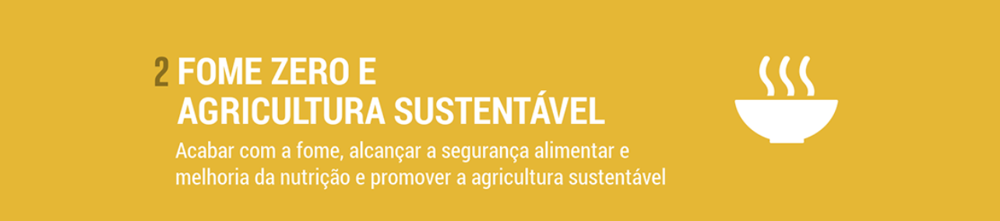

O CareFood se trata de uma ferramenta com foco em facilitar e evidenciar a existência de estabelecimentos que se preocupam em disponibilizar alimentos para pessoas menos favorecidas. Nosso objetivo é compartilhar informações úteis com pessoas ou organizações que possam encurtar o caminho da comida, até as pessoas que necessitam dela.

As doações serão feitas através dos próprios estabelecimentos, seremos apenas um canal de informações. Caso esteja interessado em ajudar, dirigir-se a guia "Fale Conosco".
Os locais de coleta de alimentos estão disponibilizados na aba Locais, lá estão contidas todas as informações necessárias, como: Nome, Endereço, Telefone, e E-mail.


A aba Fale Conosco possui um pequeno formulário no qual poderão nos mandar um e-mail, se você tem um estabelecimento e deseja fazer parte desse projeto, por favor, se comunique com a gente através dessa aba. Essa área se destina também ao Feedback.

